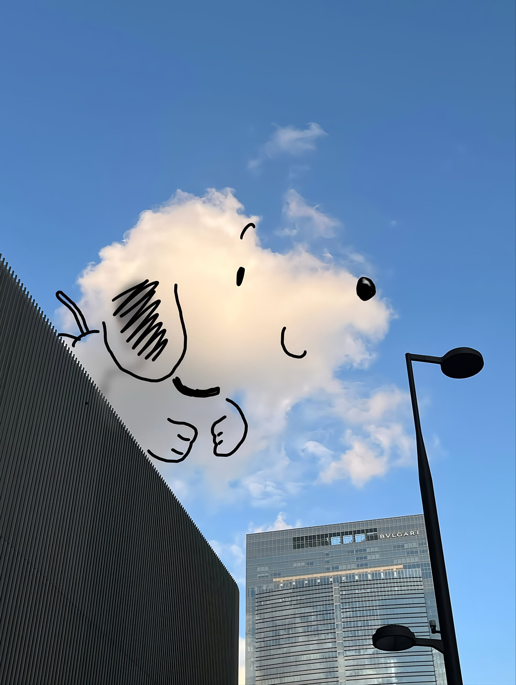

∫
∑
∂
∞
∇
∏
≈
∫
🌙

livi
梦想成为代数糕薯 | Math Major
About Me
这里算作我个人的一个小屋，装着一些感悟与学习数学时留下的痕迹
Time pass by ~
Educational Background
常州大学 (Changzhou University)
应用数学 本科 (B.S. in Applied Mathematics)
📄 Resume
Notes & Works
Analysis
Real Analysis & More
View List →
Algebra
Groups, Rings & Thesis
View List →
Beamer Slide
Presentation & Talks
View List →
Misc & Thoughts
Essays, Reading & Life
View List →
Contact
公众号:
liviovo
QQ:
3266237478